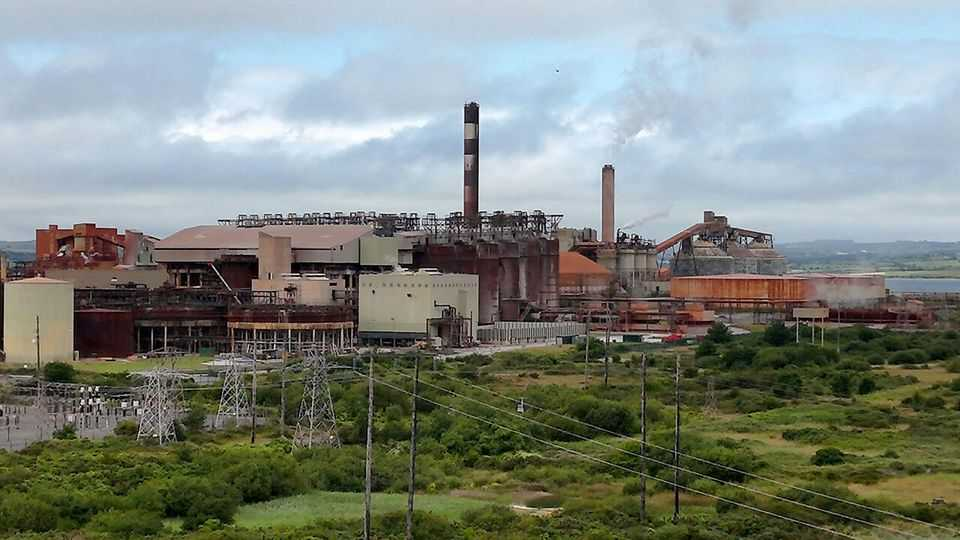
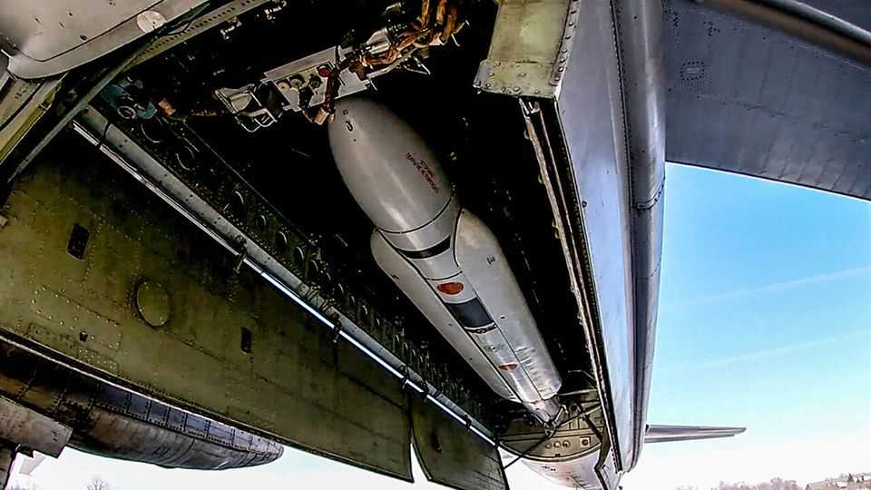

Ireland is helping supply Russia’s war machine
The EU considers putting an Irish alumina refiner on its sanctions list

Oct 1st 2026
THE IRISH know a few things about resisting an imperialist neighbour, so it is not surprising that they back European efforts to defend Ukraine against Russia. With no significant armed forces or military industry, the country’s aid to Ukraine consists chiefly of a modest bit of financial help and support for European Union sanctions. Yet on the latter count, there is a big caveat. Aughinish Alumina, a refinery in the west of Ireland, supplies a significant portion of the alumina used by Russia’s aluminium industry. The skins of missiles striking civilians in Kyiv this autumn and winter may be part Irish.
The role of Aughinish Alumina in Russia’s arms industry was detailed in March in an investigation by OCCRP, an investigative outfit, and the Irish Times, a daily. The plant exports alumina (aluminium oxide), the chemical compound used to produce aluminium, to Russian smelters. But as Europe’s largest alumina refinery, it also ships to manufacturers in France, the Netherlands and Sweden. The firm has never been subjected to the EU’s sanctions on Russia. Some member states want it included in a new round of sanctions due to be negotiated in October. Aughinish’s defenders argue that doing so would cripple Europe’s aluminium sector, but they are wrong.
Aughinish is owned by Rusal, a Russian metals conglomerate. Its sales to Russia have surged since the full-scale invasion of Ukraine in 2022, going from 24% of its exports in 2021 to 68% in 2025. The alumina travels to Rusal’s smelters in Siberia, which sell the finished aluminium to customers such as ASK, a Moscow-based trader. ASK in turn supplies over 100 Russian defence companies, which use it to build missiles, tanks, bombers and other weapons. ASK’s aluminium has gone to factories that make gyroscopes for Kh-101 cruise missiles, engines for Sukhoi fighter jets and the Iskander-M ballistic missile. A few dozen of these firms are under EU sanctions.
Rusal was founded by Oleg Deripaska, a Russian oligarch and aluminium tycoon. He has been on the EU’s sanctions list since 2022 because of his close ties to the Kremlin. But since 2018 he has held only a minority stake in Rusal, allowing the refinery to remain sanctions-free. Aughinish denies any wrongdoing.

The European Commission has always said it designs its sanctions to avoid harming Europe’s economy more than Russia’s. Aughinish says it should remain exempt on this basis. In a letter to the Irish government seen by The Economist, the firm’s management argues that without its sales to Russia, the plant would have to close, undermining Europe’s aluminium industry and other manufacturers. Yet in fact, the EU imports most of its aluminium, and produces at most a few percent of global supply. Its production has shrunk dramatically over the past decade, due to cheap Chinese imports, outdated tech, high power costs and the expense of permits under the EU’s Emission Trading Scheme. Europe’s aluminium smelters are operating at just 30% of capacity.
European smelters need a couple of megatonnes of alumina annually. So far this year, Aughinish has supplied them with only about 0.3 megatonnes. Even if sanctions force the plant to close, Europe’s smelters could find alumina elsewhere; there are four other refineries in Europe that export little or no alumina to Russia. It might hurt Russia more. Ireland was the third-biggest supplier of alumina to Russia in 2024, behind China and Indonesia.
Sanctions would be a political headache for the Irish government. The plant employs around 1,000 workers. It sells the excess electricity from its gas-fired power plant to the national grid, providing enough power for some 200,000 households, the company says. But exempting it from sanctions is a political problem, too. Ireland currently holds the rotating presidency of the EU Council, where representatives of national governments sit, and lobbying for a plant that supplies Russia with material for its war machine is a bad look.
Negotiations over the EU’s next package of sanctions will begin in early October, and several member states want to ban alumina exports to Russia. “It is complicated and not straightforward,” says an EU official working on the sanctions. Aughinish may yet end up on the sanctions list. If so, it would have no great effect on the rest of Europe’s aluminium sector. But Ireland’s tarnished reputation would be a bit shinier. ■